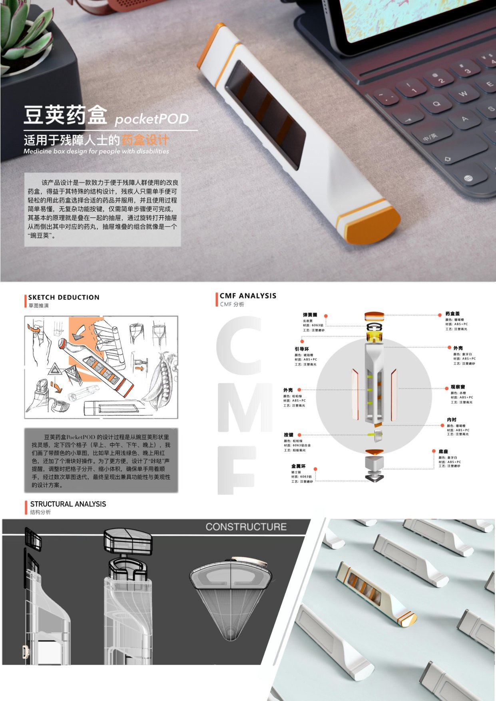

豆荚药盒
POD+ PILL CASE

「豆荚药盒」是一款以服务设计思维驱动的智能药盒产品，致力于重新定义用药体验。项目关注老年人群体的用药安全与用药依从性问题，提供从产品到服务的系统性解决方案。以「重新定义用药」为核心理念，从用户旅程出发，识别用药过程中的关键痛点：忘吃、吃错、剂量混乱、缺乏关怀感等，构建完整的用药管理闭环。产品形态取意于豆荚，柔和有机的造型语言传递温暖与关怀，打破医疗产品的冰冷感。配套的移动端应用与云端服务系统，实现用药提醒、记录追踪、家属联动等功能，形成「产品 + APP + 服务」的完整生态。
项目亮点
- 服务设计思维驱动的产品创新，超越单一产品形态
- 针对老年用户的易用性深度优化，大按键、语音提醒
- 完整的产品 + APP + 服务系统设计，形成闭环
- 豆荚形态的情感化设计，让医疗产品有温度
设计方法
用户研究 → 用户旅程地图 → 痛点分析 → 服务蓝图 → 产品定义 → 原型迭代
使用工具
Figma、Illustrator、SketchUp


第 4 页